VICTOR （ ビクター）
1927年設立のレコードと音響製品の総合ブランド。戦前の蓄音機時代からのキャリアを誇り、テレビジョン受像器の開発、EPレコード・ステレオLPレコードの発売など多くの「日本初」の実績を持つ。しかし一方で４チャンネルステレオにおけるCD-4規格や、カセットデッキのANRSノイズリダクション、映像ディスクでのVHD規格など失敗に終わった商品も多い。
資本的には米国ビクターの日本法人からスタートした。明治・大正の時代から米国ビクターの製品は輸入されていたが、当時の高額の輸入税を避けるための国産化が誕生のきっかけ。様々な企業の資本傘下を経て、戦後松下電器産業（現・パナソニック）の傘下となったが、2008年にケンウッドとともにJVC・ケンウッド・ホールディングス株式会社の傘下となり、2011年にてJVC・ケンウッド・ホールディングスに吸収された。
ヘッドフォンについても、1965年にマイラーコーンを使用したSTH-1を発売し、1970年発売の４チャンネルヘッドフォンQTH-V7でドーム型振動板を採用した老舗である。また動電全面駆動型についても独自に研究していたようだ。しかし1980年代以降は小型.軽量化の流れのなかでもきちんとしたラインナップを残してきたが、近年まで強く印象に残るモデルはない。近年は木製ハウジングや木の振動板のヘッドフォン・イヤフォンを発売している。
VICTOR （ ビクター）の製品を以下のように分類する。（この分類は個人的な意見で、メーカーの分類ではありません）
�T.「STH」時代
1970年代中盤までは「STH」で始まる型番のヘッドフォンを作っていた。最初の製品STH-1の時点ですでにマイラーコーンを採用し、かなり強力な磁石を使用していた。
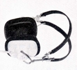 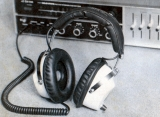
STH-1000
STH-2000
（４チャンネル機） QTH-V7
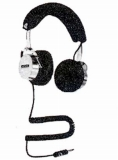 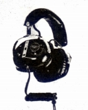
�U.「HP」時代前期
家電系メーカがヘッドフォンをオーディオ用ブランドで出し始めた頃、ビクターもヘッドフォンの型番を「STH」から「HP」に変更した。
�@「HP」型番の初期モデル
「HP」型番の初期モデルは、デザインについては「STH」時代の延長のモデルだった。HP-1000は国産のダイナミック型では極めて珍しいハイ・インピーダンス（1,000Ω）モデル。古いゼンハイザー（HD-414、HD-424のオリジナルモデル）に2,000Ωの例があるが、こうしたハイ・インピーダンス型の利点は、アンプのヘッドフォン端子に入れられた保護抵抗の値を無視し、フラットな特性を得ることにあった。
HP-5 HP-150 HP-1000
（４チャンネル機） 4HP-V5 4HP-1000
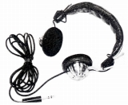 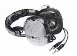
�Aダイナフラット型
動電全面駆動型のモデル。実機の製造はともかく、開発はビクター自身が行っていたようであり、1974年に同社の音響技術が概要を公表していたものを商品化したもの。なおローエンドモデルHP-D30はプッシュ・プル動作が一般的な動電全面駆動型では珍しいシングル動作のヘッドフォンとの記述がある。
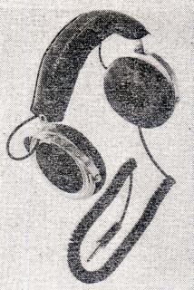 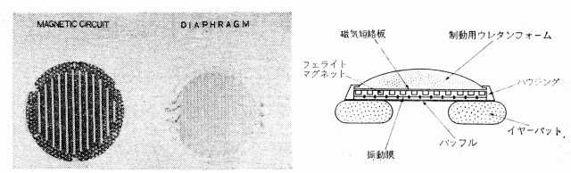
（製品発売前に公表されたプロトタイプと、構造図。プリントコイルのパターンはオルソダイナミックとも、RPとも違う。なお構造図からみて当初はプッシュ・プル動作ではなく、シングル動作で考えていたようだ。シングル動作機の市販機がHP-D30。）
HP-D30 HP-D50 HP-D70 HP-D90
HP-D35
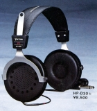 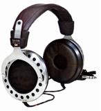
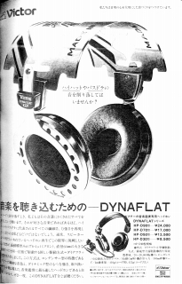
�Bダイナフラット型と並行して用意された第２世代の通常型
（開放型) HP-660 HP-770 HP-880 HP-1100
HP-414
HP-515
HP-717
（密閉型) HP-303 HP-330 HP-550
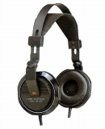 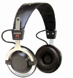
�C小型・軽量機
(HP-Mシリーズ）
ソニーのH・AIR（ヘアー）シリーズに相当するスポンジイヤパッドの小型・軽量機のシリーズ。1980年代に展開した。オプションで防寒用イヤパッドを持つHP-M11がユニーク。
HP-M5 HP-M6 HP-M7 HP-M9 HP-M10 HP-M11 HP-M13 HP-M15
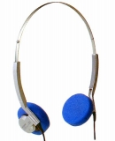 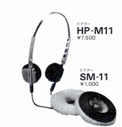
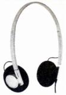
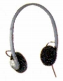
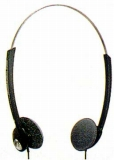
(HP-Fシリーズ＝インナーイヤー型）
ソニーのN・U・D・E（ヌード）シリーズに相当するモデル。1980年代後半までのモデルは他社の製品と比べてカラフルなデザインの製品が多い。そうした意味での頂点はHP-1。
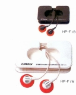
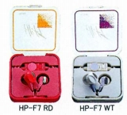
HP-F11 HP-F33 HP-F41 HP-F55 HP-F61
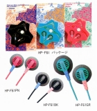
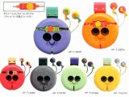
HP-F15 HP-F45 HP-F65 HP-F205
HP-F305
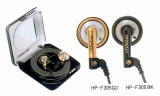
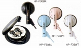
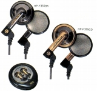
HP-F202
HP-F303
HP-F404
HP-F505
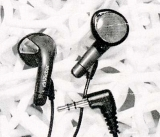
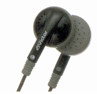
HP-F100
HP-F200L
HP-F300C
HP-F110
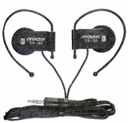
(MR-Lシリーズ＝ステレオイヤホン）
本来はモノラルのイヤホンの型番だが、一部のステレオ仕様のモデルがある。
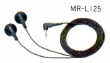
(HP-Lシリーズ＝Mシリーズの上位機種）
HP-L10 HP-L15
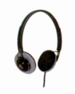
(HP-CDシリーズ＝デジタル対応の高級機）
HP-CD1 HP-CD2
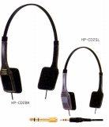
(キャラクター商品）
HP-1
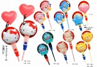
（サラウンドヘッドフォン）
�D小型・軽量機時代の鑑賞用モデル
主力が小型・軽量機に移った時代の、中〜大型鑑賞用モデル。ダイナフラット型の後の1980年代中盤のフラグシップをHP-777がつとめた。
HP-222 HP-333 HP-444 HP-555 HP-777
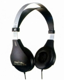 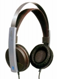
�Eデジタル対応の鑑賞用モデル(密閉型）
(HP-Dシリーズ）
1980年代後半からのＣＤ中心時代のメイン機種。HP-DXシリーズ登場まではこのシリーズの最上級機(HP-D880/1000)がフラグシップモデルをつとめた。HP-DXシリーズ登場後は中〜低価格の密閉型のシリーズとなる。2001年以降のモデルはHP-D2/3/5/7などがある。
HP-D550 HP-D660 HP-D770 HP-D880
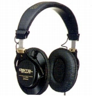
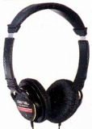
HP-D300 HP-D500 HP-D700 HP-D800 HP-D900 HP-D1000
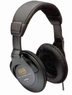
HP-D201 HP-D301 HP-D501 HP-D701 HP-D801
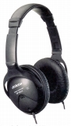 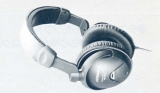
HP-D105 HP-D205 HP-D305 HP-D505 HP-D705
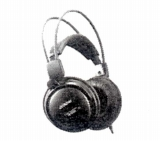
HP-D11 HP-D22 HP-D33 HP-D55 HP-D77
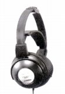
HP-D110 HP-D210 HP-D310 HP-D510 HP-D710
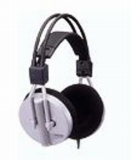
(HP-Zシリーズ）
大ぶりなカプセルを持つ低価格の密閉型。
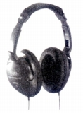
(HP-Gシリーズ）
ドイツ・ヘキスト社（現 セラニーズ）の高分子膜を採用したモデルHP-G650とゲーム用のHP-G300。
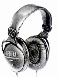
(HP-Sシリーズ）
低価格の密閉型シリーズとしてスタートしたが、やがて折り畳み機構を取り入れ、最後はオープン型を含むネックバンド型等のシリーズとなった。2001年以降にもHP-S18F/S72F/S82Fなどがある。
HP-S37 HP-S57
HP-S35 HP-S55
HP-S15F
HP-S25F
HP-S75F
HP-S17F
HP-S70F
HP-S80F
HP-S71F
HP-S81F
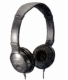 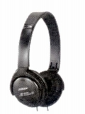 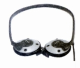
(HP-DXシリーズ）
1990年代後半からのフラグシップモデルを含めた高級機のシリーズ。現在（2010年1月）ではHP-DX1000/700がでている。
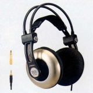
(HP-DAシリーズ）
ウールタッチイヤーパッド採用のAV鑑賞モデル。その後HP-DA21などがでた。
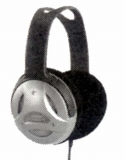
�Fデジタル対応以降の軽量モデル
(HP-Xシリーズ）
HP-Mシリーズの後継のオープンエア型のシリーズ。 2mコードの汎用機種。2001年以降にもHP-X52/72などがある。
HP-X5 HP-X7
HP-X55
HP-X50 HP-X70
HP-X51 HP-X71
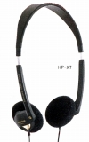
(HP-BSシリーズ）
BS放送リスニング用に企画された商品。
(HP-BS10)
(HP-AVシリーズ）
HP-Mシリーズの後継のオープンエア型のシリーズ。ロングコードのAV対応機種。なお2001年以降にHP-AV410/510が追加されている。
HP-AV200
HP-AV300
HP-AV400
HP-AV500
HP-AV600
HP-AV220
HP-AV330
HP-AV440
HP-AV550
HP-AV221
HP-AV331
HP-AV441
HP-AV551
HP-AV210
HP-AV310
(左 HP-AV600 中央 HP-AV550 右 HP-AV551)
(HP-ALシリーズ＝耳掛け式オープンエア型）
デザイン重視のシリーズで、各種の限定版が存在する。なおこのラインの商品には他に2001年2月発売のHP-AL700などが存在する。
(HP-AL5)
＊HP-550、HP-660、HP-D50、HP-M7、HP-M9、HP-M11について豊永尚輝 氏所有機の画像を使用しました。ありがとうございます。